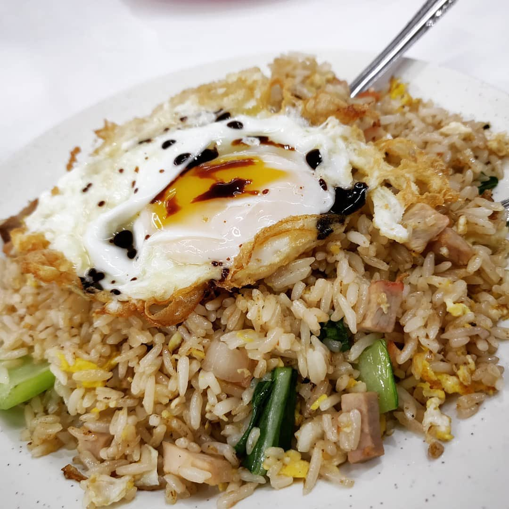

Fried Rice

Description
A quick and easy Asian-inspired dish that's perfect for using up leftover rice and vegetables.
Ingredients
- 3 cups cooked rice (preferably day-old)
- 2 tablespoons vegetable oil
- 1/2 cup diced onion
- 1/2 cup frozen peas and carrots
- 2 eggs, lightly beaten
- 2 cloves garlic, minced
- 1/4 cup soy sauce
- 2 green onions, thinly sliced
- Salt and pepper to taste